npm相关
课堂临时记录，后续单独开篇 ~
在我们需要下载第三方包之前 需要先初始化项目
npm init -y: 初始化项目, 生成 package.json 文件
init 表示的是初始化
-y 表示的是所有需要填写的内容都使用默认的
package.json字段
name：包名。规范定义它需要由小写的字母和数字组成，可以包含.、_和-，但不允许出现空格。不允许出现中文，*包名必须是唯一的*，以免对外公布时产生重名冲突的误解。除此之外，NPM还建议不要在包名中附带上node或js来重复标识它是JavaScript或Node模块。
author：作者
description：包的简介
version：版本号
main：入口文件
keywords：关键词数组，NPM中主要用来做分类搜索。一个好的关键词数组有利于用户快速找到你编写的包。
devDependencies：一些模块只在开发时需要依赖。配置这个属性，可以提示包的后续开发者安装依赖包。
dependencies：使用当前包所需要依赖的包列表。这个属性十分重要，NPM会通过这个属性帮助自动加载依赖的包。
scripts：脚本说明对象。它主要被包管理器用来安装、编译、测试和卸载包。
bin：一些包作者希望包可以作为命令行工具使用。配置好bin字段后，通过npm install package name -g命令可以将脚本添加到执行路径中，之后可以在命令行中直接执行。前面的node -gyp即是这样安装的。通过-g命令安装的模块包称为全局模式。
dependencies VS devDependencies
dependencies：生产依赖 项目在部署运行时需要用到的依赖
(npm i 包名 --save 或者 npm i 包名)
devDependencies：开发依赖 项目在开发时候需要用到的依赖
(npm i 包名 --save-dev 或者 npm i 包名 -D)
还有一种 npm i 包名 –g：全局安装 => 安装在nodejs目录下的node_modules中
安装在全局的目的是为了在任意位置都能够使用该包
为什么能在任意位置使用它呢？因为配置了环境变量
初始化项目后可以通过 npm i（install） 包名，比如：npm i jquery
来下载第三方模块，第三方模块会默认下载到当前项目下的node_modules中
卸载第三方包：npm un（uninstall） 包名（后缀和安装包的时候保持一致）
npm 设置淘宝镜像源：npm config set registry=https://registry.npm.taobao.org/
什么是构建工具
事实上随着前端的快速发展，目前前端的开发已经变的越来越复杂了：
比如开发过程中我们需要通过模块化的方式来开发；
比如也会使用一些高级的特性来加快我们的开发效率或者安全性，比如通过ES6+、TypeScript开发脚本逻辑， 通过sass、less等方式来编写css样式代码；
比如开发过程中，我们还希望实时的监听文件的变化来并且反映到浏览器上，提高开发的效率；
比如开发完成后我们还需要将代码进行压缩、合并以及其他相关的优化；
等等….
上述这些工作理论上是可以人工完成的，但是它繁琐，工作量大，本质是无意义的劳动，人为的错误也随着流程的增加而增加了更多的出错率。所以每一个团队都希望有一种工具，能帮助整个团队在开发中能精简流程、提高效率、减少错误率，管理各种小工具之间的错综复杂的关系或者配置，这种工具就叫构建工具。
说到构建工具，我往往会在前面加**「自动化」**三个字，因为构建工具就是用来让我们不再做机械重复的事情，解放我们的双手的(my god)。所以构建工具作用是：提升项目性能，提高开发效率。
构建工具的发展
有了工具能满足基本的打包工作，对于开发人员而言总是需要更精益求精。就像在一辆能发动的车上去安装各种零件来提升使用者的体验。这些零件就是构建工具所需要的插件，这些插件对提升开发效率很有帮助，包括语法转换（Babel），模板热更新（HotModuleReplacementPlugin），清理重复的打包的文件（clean-webpack-plugin）等等。
构建工具目前来说还在处于不停发展的阶段，但是相应的打包技术已经很成熟。 本次主要介绍市面上比较火热的Gulp，Grunt， Webpack, Vite这三个打包工具之间的对比和它们的优势。
构建工具介绍
Grunt: 是一个优化前端的开发流程的工具。
配置一系列的task，定义task处理的事务（例如文件压缩合并、启动server、版本控制等），然后定义执行顺序，来让Grunt执行这些task，从而构建项目的整个前端开发流程。
工作方式：
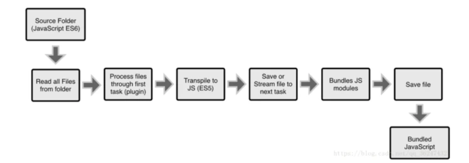
Wepack: 是一种模块化的解决方案。更强调模块化。
把你的项目当做一个整体，通过一个指定的主文件名（index.js, 一般是入口文件），webpack 将从这个文件开始找到你的项目所依赖的文件，使用loaders 来处理它们，最后打包为一个浏览器可识别的js 文件。
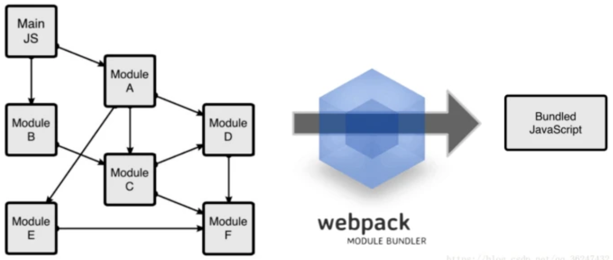
Vite: 一种新型前端构建工具,它区别与不同的打包工具,它在开发环境中不对项目进行整体打包。
原因：当我们的构建的项目越来越庞大时，对整个项目进行资源整合的时间会变长，如果有数千个模块的项目在进行构建时甚至需要几分钟才能启动开发服务器。所以vite解决了在开发过程中需要等待整个项目打包这一段过程，让开发时更加丝滑。
依赖：使用esbuild（GO编写）预构建依赖，比 JavaScript 编写的打包器预构建依赖快 10-100 倍。
源码：在浏览器请求资源时-> vite转换一些非js文件->动态导入代码。
源码利用浏览器的协商缓存（304 Not Modified），依赖模块请求则会通过 Cache-Control: max-age=31536000, immutable 进行强缓存，保持热更新的速度。
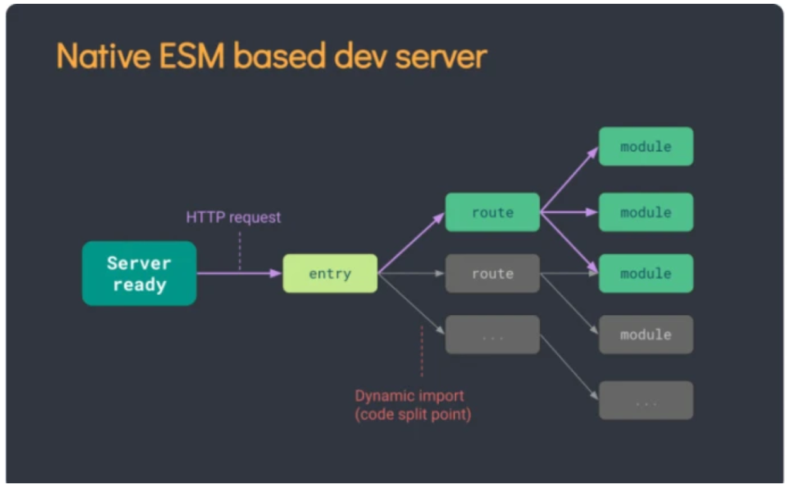
如何选择适合的构建工具？
Grunt对于一些中小型项目而言更加轻便和灵活，如果只针对代码压缩合并，Grunt就可以满足要求，发展历程长，基本是稳定的。但是如果要处理庞大的项目文件，特别是处理多种类型的资源文件，强调模块开发，Webpack则更适合这个场景。Webpack对于中大型项目而言是更加稳定的，文档资料和迭代速度也很快。当然这对开发人员而言也是挺头疼的，隔一段时间就需要去适应文档的配置。Vite作为一门新的构建技术，想要它去构建一门稳定的中大型项目有点冒险，虽然已经发布稳定版本，但是还是会有一些潜在的风险，等它更多人推广后使用更加稳妥，但是对于平时构建一些个人网站和项目等使用vite，感受一下它的便捷也可以。
什么是webpack
webpack是一种前端资源构建工具，一个静态模块打包器(module bundler)。 在 webpack看来,前端的所有资源文件(js/json/css/img/less/…)都会作为模块处理。 它将根据模块的依赖关系进行静态分析，打包生成对应的静态资源(bundle)。
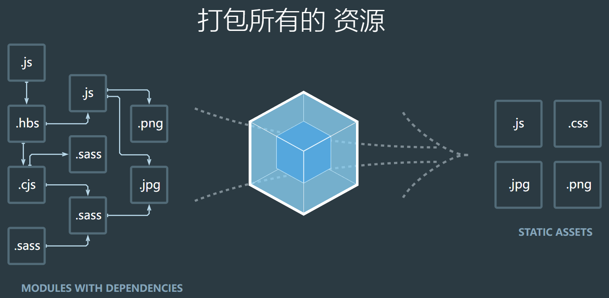
理解module、chunk、bundle
在 webpack 中，一切皆module，任何一个文件都可以看成是module。js、css、图片等都是module
webpack 会将入口文件以及它的依赖引入到一个 chunk 中，然后进过一系列处理打包成bundle
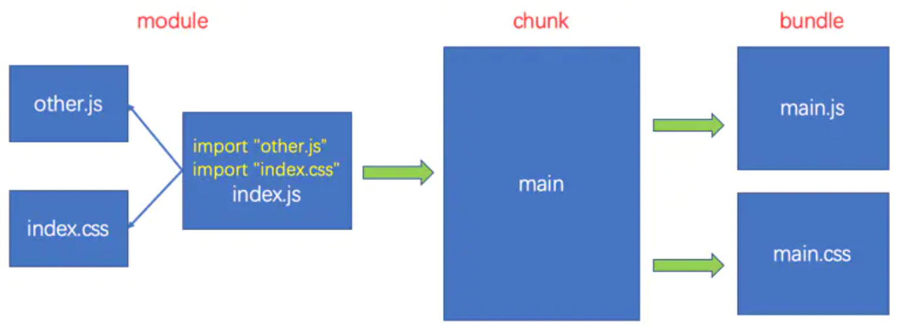
大致流程如下：
1、根据index.js入口文件依赖关系生成树状图
2、根据树状图引入相关的资源 生成chunk(块)
3、对chunk进行处理 (babel、less-loader …)
4、打包生成bundler.js
5、将bundler.js文件引入到index.html中
webpack五个核心概念
Entry
入口（Entry）：指示 webpack以哪个文件为入口起点开始打包，分析构建内部依赖图。其取值可以是字符串，数组或者一个对象
1 | // 单入口单文件 |
Output
输出（Output）：指示 webpack打包后的资源 bundles输出到哪里去，以及如何命名
webpack打包的输出，常用配置如下：
1 | output: { |
Loader
处理器（Loader）：webpack默认只能处理js、json格式的文件，而loader的作用则是将其他格式的文件，转换成webpack能够处理的文件
使用loader需要在webpack配置文件的module.rules中配置：
1 | module.exports = { |
Plugins
插件(Plugins)可以用于执行范围更广的任务，它能处理loader无法处理的事情。插件的范围包括，从打包优化和压缩， 一直到重新定义环境中的变量等。
它使用非常简单，在plugins数组中添加插件的实例化对象即可
1 | const xxxWebpackPlugin = require("xxx-webpack-plugin"); |
mode
webpack打包分为两种模式，开发模式（development）与生产模式（production），默认为生产模式
| 选项 | 描述 | 特点 |
|---|---|---|
| development | 会将 process.env.NODE_ENV 的值设为 development。启用 NamedChunksPlugin 和 NamedModulesPlugin。 | 能让代码本地调试 运行的环境 |
| production | 会将 process.env.NODE_ENV 的值设为 production。启用 FlagDependencyUsagePlugin, FlagIncludedChunksPlugin, ModuleConcatenationPlugin, NoEmitOnErrorsPlugin, OccurrenceOrderPlugin, SideEffectsFlagPlugin 和 UglifyJsPlugin. | 能让代码优化上线 运行的环境 |
Mode的配置更多含义
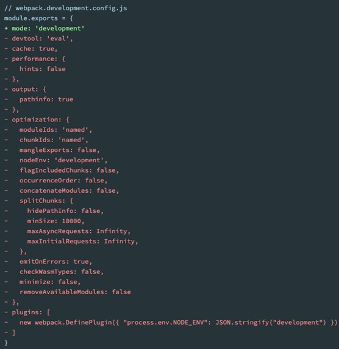
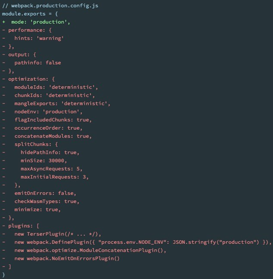
webpack使用前提
webpack的官方文档是 https://webpack.js.org/
webpack的中文官方文档是 https://webpack.docschina.org/
DOCUMENTATION：文档详情，也是我们最关注的
Webpack的运行是依赖Node环境的，所以我们电脑上必须有Node环境
所以我们需要先安装Node.js，并且同时会安装npm；
我当前电脑上的node版本是v14.15.5，npm版本是6.14.11（你也可以使用nvm或者n来管理Node版本）；
Node官方网站：https://nodejs.org/
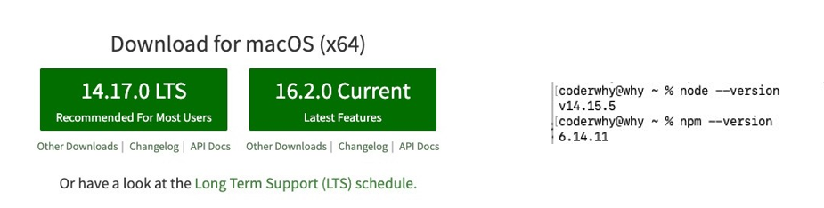
webpack安装
webpack的安装目前分为两个：webpack、webpack-cli
那么它们是什么关系呢？
执行webpack命令，会执行node_modules下的.bin目录下的webpack；
webpack在执行时是依赖webpack-cli的，如果没有安装就会报错；
而webpack-cli中代码执行时，才是真正利用webpack进行编译和打包的过程；
所以在安装webpack时，我们需要同时安装webpack-cli（第三方的脚手架事实上是没有使用webpack-cli的，而是类似于自 己的 vue-service-cli 的东西）
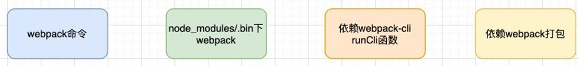
全局安装：npm install webpack webpack-cli –g
局部安装：npm install webpack webpack-cli –D
webpack的默认打包
我们可以通过webpack进行打包，之后运行打包之后的代码
在目录下直接执行 webpack 命令：webpack
生成一个dist文件夹，里面存放一个main.js的文件，就是我们打包之后的文件：
这个文件中的代码被压缩和丑化了；
另外我们发现代码中依然存在ES6的语法，比如箭头函数、const等，这是因为默认情况下webpack并不清楚我们打包后的文 件是否需要转成ES5之前的语法，后续我们需要通过babel来进行转换和设置；
我们发现是可以正常进行打包的，但是有一个问题，webpack是如何确定我们的入口的呢？
事实上，当我们运行webpack时，webpack会查找当前目录下的 src/index.js作为入口；
所以，如果当前项目中没有存在src/index.js文件，那么会报错；
当然，我们也可以通过配置来指定入口和出口
开发环境指令：
webpack src/js/index.js -o build/js/built.js --mode=development
功能：webpack能够编译打包 js和 json文件，并且能将 es6的模块化语法转换成 浏览器能识别的语法。
webpack --entry ./src/main.js --output-path ./build/js/bundle.js --mode=development
生产环境指令：
webpack src/js/index.js -o build/js/built.js --mode=production
功能：在开发配置功能上多一个功能，压缩代码。
webpack --entry ./src/main.js --output-path ./build/js/bundle.js --mode=production
配置script脚本
在package.json，script字段下配置脚本，执行命令更为简便：npm run 脚本名
结论 ：
- webpack能够编译打包 js和 json文件。
- 能将 es6的模块化语法转换成浏览器能识别的语法。
- 能压缩代码。
问题 ：
- 不能编译打包 css、img等文件。
- 不能将 js的 es6基本语法转化为 es5以下语法。
- 在通常情况下，webpack需要打包的项目是非常复杂的，并且我们需要一系列的配置来满足要求，默认配置必然
是不可以的。
webpack开发环境配置
创建配置文件
在项目根目录下创建文件 webpack.config.js，来作为webpack的配置文件，名字默认，如果要修改，执行时需要添加 --config 配置文件名来读取该配置文件
1 | const { resolve } = require('path'); // node 内置核心模块，用来处理路径问题 |
打包样式资源
1、准备css、less资源
1 | // 创建一个元素 |
2、下载安装 loader 包 npm i css-loader -D
1 | 如何使用这个loader来加载css文件呢？有三种方式： |
3、修改配置文件
1 | // resolve 用来拼接绝对路径的方法 |
4、运行指令：webpack 或 自定义脚本 npm run build
style-loader
我们已经可以通过css-loader来加载css文件了
但是你会发现这个css在我们的代码中并没有生效（页面没有效果）。
这是为什么呢？
因为css-loader只是负责将.css文件进行解析，并不会将解析之后的css插入到页面中；
如果我们希望再完成插入style的操作，那么我们还需要另外一个loader，就是style-loader；
安装style-loader：npm install style-loader -D
那么我们应该如何使用style-loader：
在配置文件中，添加style-loader，具体看上面代码
注意：因为loader的执行顺序是从右向左（或者说从下到上，或者说从后到前的），所以我们需要将style- loader写到css-loader的前面；
ps：当前目前我们的css是通过页内样式的方式添加进来的；
后续我们也会讲如何将css抽取到单独的文件中，并且进行压缩等操作
less-loader
在我们开发中，我们可能会使用less、sass、stylus的预处理器来编写css样式，效率会更高。
那么，如何可以让我们的环境支持这些预处理器呢？
首先我们需要确定，less、sass等编写的css需要通过工具转换成普通的css；
比如我们编写如下的less样式：
1 | @fsz:20px; |
我们可以使用less工具来完成它的编译转换：npm install less -D
执行如下命令：npx lessc ./src/css/title.less title.css
但是在项目中我们会编写大量的css，它们如何可以自动转换呢？
这个时候我们就可以使用less-loader，来自动使用less工具转换less到css；
此时我们需要配置webpack.config.js
1 | { |
执行npm run build，less就可以自动转换成css，并且页面也会生效了
PostCss
什么是PostCSS呢？
PostCSS是一个通过JavaScript来转换样式的工具；
这个工具可以帮助我们进行一些CSS的转换和适配，比如自动添加浏览器前缀、css样式的重置；
但是实现这些功能，我们需要借助于PostCSS对应的插件；
如何使用PostCSS呢？主要就是两个步骤：
第一步：查找PostCSS在构建工具中的扩展，比如webpack中的postcss-loader；
第二步：选择可以添加你需要的PostCSS相关的插件；
当然，我们能不能也直接在终端使用PostCSS呢？
也是可以的，但是我们需要单独安装一个工具postcss-cli；
我们可以安装一下它们：postcss、postcss-cli
npm install postcss postcss-cli -D
我们编写一个需要添加前缀的css：
1 | .dv { |
autoprefixer
因为我们需要添加前缀，所以要安装autoprefixer：
npm install autoprefixer -D
直接使用使用postcss工具，并且制定使用autoprefixer
npx postcss --use autoprefixer -o end.css ./src/css/style.css
postcss-loader
真实开发中我们必然不会直接使用命令行工具来对css进行处理，而是可以借助于构建工具：
在webpack中使用postcss就是使用postcss-loader来处理的；
我们来安装postcss-loader：
npm install postcss-loader -D
我们修改加载css的loader：（配置文件已经过多，给出一部分了）
1 | { |
当然，我们也可以将这些配置信息放到一个单独的文件中进行管理：
在根目录下创建postcss.config.js
1 | module.exports = { |
postcss-preset-env
事实上，在配置postcss-loader时，我们配置插件并不需要使用autoprefixer。
我们可以使用另外一个插件：postcss-preset-env
postcss-preset-env也是一个postcss的插件；
它可以帮助我们将一些现代的CSS特性，转成大多数浏览器认识的CSS，并且会根据目标浏览器或者运行时环境 添加所需的polyfill；
也包括会自动帮助我们添加autoprefixer（所以相当于已经内置了autoprefixer）；
首先，我们需要安装postcss-preset-env：
npm install postcss-preset-env -D
之后，我们直接修改掉之前的autoprefixer即可：
1 | { |
打包HTML资源
HtmlWebpackPlugin
另外还有一个不太规范的地方：
我们的HTML文件是编写在根目录下的，而最终打包的dist文件夹中是没有index.html文件的。
在进行项目部署的时，必然也是需要有对应的入口文件index.html；
所以我们也需要对index.html进行打包处理；
对HTML进行打包处理我们可以使用另外一个插件：HtmlWebpackPlugin；
1、创建html页面
2、下载安装 plugin 包：npm install -D html-webpack-plugin
3、修改配置文件
1 | const { resolve } = require('path'); |
打包图片资源
file-loader
1、创建图片资源
1 | 方式一: |
2、下载安装 loader 包 npm install --save-dev file-loader
3、修改配置文件
1 | const { resolve } = require('path'); |
文件命名规则
1 | 有时候我们处理后的文件名称按照一定的规则进行显示： |
url-loader
url-loader和file-loader的工作方式是相似的，但是可以将较小的文件，转成base64的URI
安装：npm install url-loader -D
1 | { |
显示结果是一样的，并且图片可以正常显示；
但是在dist文件夹中，我们会看不到图片文件：
因为默认情况下url-loader会将所有的图片文件转成base64编码
但是开发中我们往往是小的图片需要转换，但是大的图片直接使用图片即可
这是因为小的图片转换base64之后可以和页面一起被请求，减少不必要的请求过程；
而大的图片也进行转换，反而会影响页面的请求速度；
那么，我们如何可以限制哪些大小的图片转换和不转换呢？
url-loader有一个options属性limit，可以用于设置转换的限制；
url-loader在webpack5中已废弃
html-loader
在html中引入一张图片，npm run build后发现该图片无法打包
解决方式：
安装html-loader npm i html-loader -D
修改配置文件
1 | // 处理html中的图片 |
打包其它资源
1、引入字体图标
1 | let elI = document.createElement('i') |
2、下载 file-loader ：npm i file-loader -D
3、修改配置文件
1 | //新增规则 => 打包其他资源(除了 html/js/css资源以外的资源) |
asset module type
我们当前使用的webpack版本是webpack5：
在webpack5之前，加载这些资源我们需要使用一些loader，比如raw-loader 、url-loader、file-loader；
在webpack5开始，我们可以直接使用资源模块类型（asset module type），来替代上面的这些loader；
资源模块类型(asset module type)，通过添加 4 种新的模块类型，来替换所有这些 loader：
asset/resource 发送一个单独的文件并导出 URL。之前通过使用 file-loader 实现；
asset/inline 导出一个资源的 data URI。之前通过使用 url-loader 实现；
asset/source 导出资源的源代码。之前通过使用 raw-loader 实现；
asset 在导出一个 data URI 和发送一个单独的文件之间自动选择。之前通过 url-loader + limit 配置资源体积限制实现；
比如打包图片：
1 | { |
转base64
1 | 因为不生成文件，所以没有generator属性 |
比如打包字体：
1 | { |
Plugins
Webpack的另一个核心是Plugin，官方有这样一段对Plugin的描述：
While loaders are used to transform certain types of modules, plugins can be leveraged to perform a wider range of tasks like bundle optimization, asset management and injection of environment variables.
上面表达的含义翻译过来就是：
Loader是用于特定的模块类型进行转换；
Plugin可以用于执行更加广泛的任务，比如打包优化、资源管理、环境变量注入等
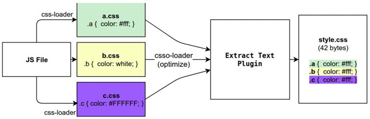
CleanWebpackPlugin
前面我们演示的过程中，每次修改了一些配置，重新打包时，都需要手动删除build文件夹：
我们可以借助于一个插件来帮助我们完成，这个插件就是CleanWebpackPlugin；
首先，我们先安装这个插件：
npm install clean-webpack-plugin -D
修改配置文件
1 | const { CleanWebpackPlugin } = require('clean-webpack-plugin') |
HtmlWebpackPlugin
对HTML进行打包处理我们可以使用另外一个插件：HtmlWebpackPlugin；
1、创建html页面
2、下载安装 plugin 包：npm install -D html-webpack-plugin
3、修改配置文件
1 | const { resolve } = require('path'); |
自定义html模板
如果我们想在自己的模块中加入一些比较特别的内容：
比如添加一个noscript标签，在用户的JavaScript被关闭时，给予响应的提示；
比如在开发vue或者react项目时，我们需要一个可以挂载后续组件的根标签 ；
我们需要一个属于自己的模板
我们选择复制vue的index.html作为模板
1 |
|
上面的代码中，会有一些类似这样的语法<%= 变量 %>，这个是EJS模块填充数据的方式。
在配置HtmlWebpackPlugin时，我们可以添加如下配置：
template：指定我们要使用的模块所在的路径；
title：在进行htmlWebpackPlugin.options.title读取时，就会读到该信息；
但是，这个时候编译还是会报错，因为在我们的模块中还使用到一个BASE_URL的常量：
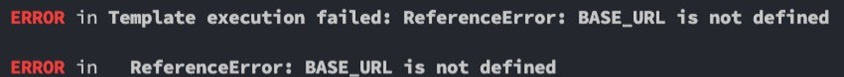
这是因为在编译template模块时，有一个BASE_URL：
1 | <link rel="icon" href="<%= BASE_URL %>favicon.ico"> |
但是我们并没有设置过这个常量值，所以会出现没有定义的错误；
这个时候我们可以使用DefinePlugin插件
DefinePlugin
DefinePlugin允许在编译时创建配置的全局常量，是一个webpack内置的插件（不需要单独安装）：
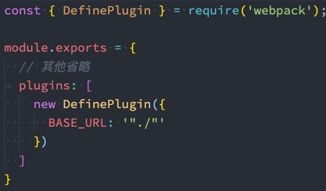
这个时候，编译template就可以正确的编译了，会读取到BASE_URL的值
CopyWebpackPlugin
在vue的打包过程中，如果我们将一些文件放到public的目录下，那么这个目录会被复制到dist文件夹中。
这个复制的功能，我们可以使用CopyWebpackPlugin来完成；
安装CopyWebpackPlugin插件：
npm install copy-webpack-plugin -D
接下来配置CopyWebpackPlugin即可：
复制的规则在patterns中设置；
**from：**设置从哪一个源中开始复制；
**to：**复制到的位置，可以省略，会默认复制到打包的目录下；
**globOptions：**设置一些额外的选项，其中可以编写需要忽略的文件：
.DS_Store：mac目录下回自动生成的一个文件；
index.html：也不需要复制，因为我们已经通过HtmlWebpackPlugin完成了index.html的生成；
1 | new copyWebpackPlugin({ |
Babel相关
事实上，在开发中我们很少直接去接触babel，但是babel对于前端开发来说，目前是不可缺少的一部分：
开发中，我们想要使用ES6+的语法，想要使用TypeScript，开发React项目，它们都是离不开Babel的；
所以，学习Babel对于我们理解代码从编写到线上的转变过程至关重要；
那么，Babel到底是什么呢？
Babel是一个工具链，主要用于旧浏览器或者环境中将ECMAScript 2015+代码转换为向后兼容版本的 JavaScript；
包括：语法转换、源代码转换等；
1 | const num = 10 |
Babel命令行使用
babel本身可以作为一个独立的工具（和postcss一样），不和webpack等构建工具配置来单独使用。
如果我们希望在命令行尝试使用babel，需要安装如下库：
@babel/core：babel的核心代码，必须安装；
@babel/cli：可以让我们在命令行使用babel；
npm install @babel/cli @babel/core -D
使用babel来处理我们的源代码：
src：是源文件的目录；
–out-dir：指定要输出的文件夹dist；
npx babel src --out-dir dist
插件的使用
比如我们需要转换箭头函数，那么我们就可以使用箭头函数转换相关的插件
npm install @babel/plugin-transform-arrow-functions -D
npx babel src --out-dir dist --plugins=@babel/plugin-transform-arrow-functions
查看转换后的结果：我们会发现 const 并没有转成 var
这是因为 plugin-transform-arrow-functions，并没有提供这样的功能；
我们需要使用 plugin-transform-block-scoping 来完成这样的功能；
npm install @babel/plugin-transform-block-scoping -D
npx babel src --out-dir dist --plugins=@babel/plugin-transform-block-scoping,@babel/plugin-transform-arrow-functions
Babe的预设preset
但是如果要转换的内容过多，一个个设置是比较麻烦的，我们可以使用预设（preset）：
后面我们再具体来讲预设代表的含义；
安装@babel/preset-env预设：
npm install @babel/preset-env -D
执行如下命令：
npx babel src --out-dir dist --presets=@babel/preset-env
Babel的底层原理
babel是如何做到将我们的一段代码（ES6、TypeScript、React）转成另外一段代码（ES5）的呢？
从一种源代码（原生语言）转换成另一种源代码（目标语言），这是什么的工作呢？
就是编译器，事实上我们可以将babel看成就是一个编译器。
Babel编译器的作用就是将我们的源代码，转换成浏览器可以直接识别的另外一段源代码；
Babel也拥有编译器的工作流程：
- 解析阶段（Parsing)
- 转换阶段（Transformation）
- 生成阶段（Code Generation）
参考：https://github.com/jamiebuilds/the-super-tiny-compiler
Babel编译器执行原理
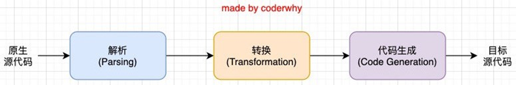
当然，这只是一个简化版的编译器工具流程，在每个阶段又会有自己具体的工作
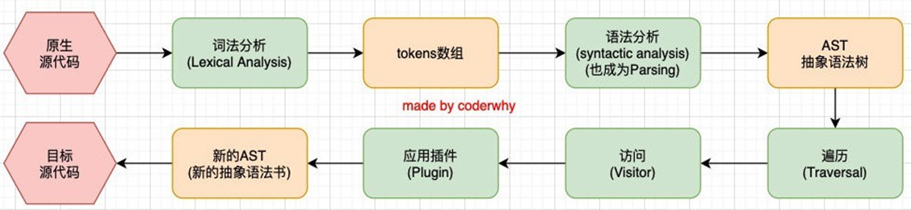
babel-loader
在实际开发中，我们通常会在构建工具中通过配置babel来对其进行使用的，比如在webpack中。
那么我们就需要去安装相关的依赖：
如果之前已经安装了@babel/core，那么这里不需要再次安装；
npm install babel-loader @babel/core
我们可以设置一个规则，在加载js文件时，使用我们的babel
1 | { |
babel/preset-env
如果我们一个个去安装使用插件，那么需要手动来管理大量的babel插件，我们可以直接给webpack提供一个 preset，webpack会根据我们的预设来加载对应的插件列表，并且将其传递给babel。
比如常见的预设有三个：
env
react
TypeScript
安装preset-env：
npm install @babel/preset-env
配置文件修改看上面
babel配置文件
像之前一样，我们可以将babel的配置信息放到一个独立的文件中，babel给我们提供了两种配置文件的编写：
babel.config.json（或者.js，.cjs，.mjs）文件；
.babelrc.json（或者.babelrc，.js，.cjs，.mjs）文件；
它们两个有什么区别呢？目前很多的项目都采用了多包管理的方式（babel本身、element-plus、umi等）；
.babelrc.json：早期使用较多的配置方式，但是对于配置Monorepos项目是比较麻烦的；
babel.config.js（babel7）：可以直接作用于Monorepos项目的子包，更加推荐；
1 | module.exports = { |
corejs
js兼容性处理：babel-loader @babel/core
-
基本js兼容性处理 --> @babel/preset-env
- 问题：只能转换基本语法，如promise高级语法不能转换
-
全部js兼容性处理 --> @babel/polyfill
-
问题：我只要解决部分兼容性问题，但是将所有兼容性代码全部引入，体积太大了~
-
需要做兼容性处理的就做：按需加载 --> core-js
配置文件修改
1
2
3
4
5
6
7
8
9
10
11
12
13
14
15
16
17
18
19
20
21
22
23
24
25
26
27
28
29
30
31{
test: /\.js$/,
exclude: /node_modules/,
loader: 'babel-loader',
options: {
// 预设：指示babel做怎么样的兼容性处理
presets: [
[
'@babel/preset-env',
{
// 按需加载
useBuiltIns: 'usage',
// 指定core-js版本
corejs: {
version: 3
},
// 指定兼容性做到哪个版本浏览器
targets: {
chrome: '60',
firefox: '60',
ie: '9',
safari: '10',
edge: '17'
}
}
]
],
// 开启babel缓存
cacheDirectory: true
}
}
eslint
我们希望通过eslint对js语法进行检查 目的为了统一编码规范
1、官网查找eslint-loader 发现过期了 官网推荐使用eslint-webpack-plugin
2、找到eslint-webpack-plugin包 提示需要安装eslint包
3、安装完以后 webpack执行命令报错src路径下缺少.eslintrc.js文件(自定义校验规则文件)
4、在src下新增**.eslintrc.js**文件 自定义编码规则 webpack执行检查是否生效
1 | module.exports = { |
5、查找eslint-config-airbnb-base包 提示如果要支持es6以上的语法需要安装eslint-plugin-import和eslint
6、安装完成后 配置package.json文件 继承airbnb-base校验规则
7、执行webpack 检查校验规则是否生效
1 | 语法检查： eslint-loader eslint |
1 | plugins: [ |
Vue源码打包
1 | // 入口文件 |
通过查看我们发现界面上是没有效果的
并且查看运行的控制台，会发现如下的警告信息
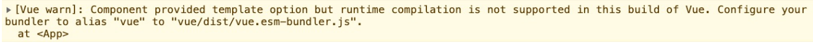
Vue打包后不同版本解析
1 | vue(.runtime).global(.prod).js： |
运行时+编译器 vs 仅运行时
1 | 在Vue的开发过程中我们有三种方式来编写DOM元素： |
全局标识的配置
我们会发现控制台还有另外的一个警告：
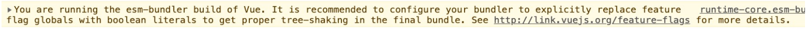
在GitHub上的文档中我们可以找到说明：
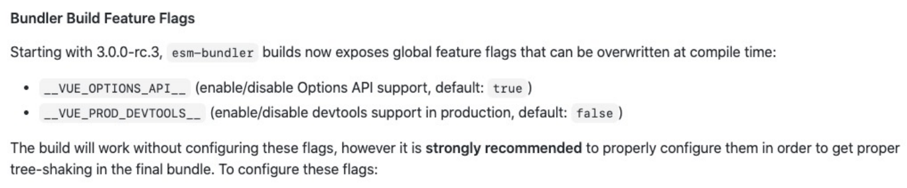
这是两个特性的标识，一个是使用Vue的Options，一个是Production模式下是否支持devtools工具
虽然他们都有默认值，但是强烈建议我们手动对他们进行配置；
1 | new DefinePlugin({ |
VSCode对SFC文件的支持
真实开发中多数情况下我们都是使用SFC（ single-file components (单文件组件) ）
我们先说一下VSCode对SFC的支持
插件一：Vetur，从Vue2开发就一直在使用的VSCode支持Vue的插件；
插件二：Volar，官方推荐的插件（后续会基于Volar开发官方的VSCode插件）；
编写App.vue代码
Father.vue
1 | <template> |
Son.vue
1 | <template> |
App.vue的打包过程
我们对代码打包会报错：我们需要合适的Loader来处理文件
这个时候我们需要使用vue-loader
npm install vue-loader@next -D
在webpack的模板规则中进行配置
1 | { |
@vue/compiler-sfc
打包依然会报错，这是因为我们必须添加@vue/compiler-sfc来对template进行解析
npm install @vue/compiler-sfc -D
另外我们需要配置对应的Vue插件
1 | // 解构vue-loader |
搭建本地服务器
为什么要搭建？
目前我们开发的代码，为了运行需要有两个操作：
操作一：npm run build，编译相关的代码；
操作二：通过live server或者直接通过浏览器，打开index.html代码，查看效果；
这个过程经常操作会影响我们的开发效率，我们希望可以做到，当文件发生变化时，可以自动的完成 编译 和 展示；
为了完成自动编译，webpack提供了几种可选的方式：
webpack watch mode；
webpack-dev-server（常用）；
webpack-dev-middleware；
Webpack watch
webpack给我们提供了watch模式：
在该模式下，webpack依赖图中的所有文件，只要有一个发生了更新，那么代码将被重新编译；
我们不需要手动去运行 npm run build指令了；
如何开启watch呢？两种方式：
方式一：在导出的配置中，添加 watch: true；
方式二：在启动webpack的命令中，添加 --watch的标识；
这里我们选择方式二，在package.json的 scripts 中添加一个 watch 的脚本：
1 | "scripts": { |
webpack-dev-server
上面的方式可以监听到文件的变化，但是事实上它本身是没有自动刷新浏览器的功能的：
当然，目前我们可以在VSCode中使用live-server来完成这样的功能；
但是，我们希望在不使用live-server的情况下，可以具备live reloading（实时重新加载）的功能；
安装webpack-dev-server
npm install webpack-dev-server -D
修改配置文件，告知 dev server，从什么位置查找文件：
contentBase 已经从webpack5中移除 使用static取代
1 | devServer: { |
webpack-dev-server 在编译之后不会写入到任何输出文件。而是将 bundle 文件保留在内存中：事实上webpack-dev-server使用了一个库叫memfs（memory-fs webpack自己写的）
认识模块热替换（HMR）
什么是HMR呢？
HMR的全称是Hot Module Replacement，翻译为模块热替换；
模块热替换是指在 应用程序运行过程中，替换、添加、删除模块，而无需重新刷新整个页面；
HMR通过如下几种方式，来提高开发的速度：
不重新加载整个页面，这样可以保留某些应用程序的状态不丢失；
只更新需要变化的内容，节省开发的时间；
修改了css、js源代码，会立即在浏览器更新，相当于直接在浏览器的devtools中直接修改样式；
如何使用HMR呢？
默认情况下，webpack-dev-server已经支持HMR，我们只需要开启即可；
在不开启HMR的情况下，当我们修改了源代码之后，整个页面会自动刷新，使用的是live reloading
开启HMR
修改配置文件:
1 | devServer: { |
浏览器控制台查看效果
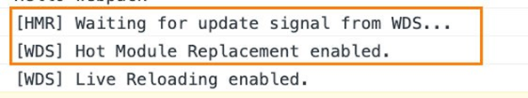
但是你会发现，当我们修改了某一个模块的代码时，依然是刷新的整个页面：
这是因为我们需要去指定哪些模块发生更新时，进行HMR；
1 | import './a.js' |
框架的HMR
有一个问题：在开发其他项目时，我们是否需要经常手动去写入 module.hot.accpet相关的API呢？
比如开发Vue、React项目，我们修改了组件，希望进行热更新，这个时候应该如何去操作呢？
事实上社区已经针对这些有很成熟的解决方案了：
比如vue开发中，我们使用vue-loader，此loader支持vue组件的HMR，提供开箱即用的体验；
比如react开发中，有React Hot Loader，实时调整react组件（目前React官方已经弃用了，改成使用react- refresh）；
HRM原理
那么HMR的原理是什么呢？如何可以做到只更新一个模块中的内容呢？
webpack-dev-server会创建两个服务：提供静态资源的服务（express）和Socket服务（net.Socket）；
express server负责直接提供静态资源的服务（打包后的资源直接被浏览器请求和解析）；
HMR Socket Server，是一个socket的长连接：
长连接有一个最好的好处是建立连接后双方可以通信（服务器可以直接发送文件到客户端）；
当服务器监听到对应的模块发生变化时，会生成两个文件.json（manifest文件）和.js文件（update chunk）；
通过长连接，可以直接将这两个文件主动发送给客户端（浏览器）；
浏览器拿到两个新的文件后，通过HMR runtime机制，加载这两个文件，并且针对修改的模块进行更新；
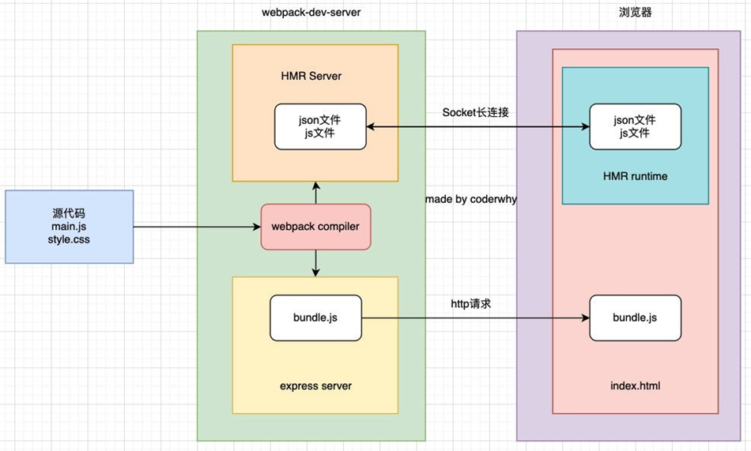
hotOnly、host配置
host设置主机地址：
默认值是localhost；
如果希望其他地方也可以访问，可以设置为 0.0.0.0；
localhost 和 0.0.0.0 的区别：
localhost：本质上是一个域名，通常情况下会被解析成127.0.0.1;
127.0.0.1：回环地址(Loop Back Address)，表达的意思其实是我们主机自己发出去的包，直接被自己接收;
正常的数据库包发送过程 应用层 - 传输层 - 网络层 - 数据链路层 - 物理层 ;
而回环地址，是在网络层直接就被获取到了，是不会经常数据链路层和物理层的;
比如我们监听 127.0.0.1时，在同一个网段下的主机中，通过ip地址是不能访问的;
0.0.0.0：监听IPV4上所有的地址，再根据端口找到不同的应用程序;
比如我们监听 0.0.0.0时，在同一个网段下的主机中，通过ip地址是可以访问的;
port、open、compress
port设置监听的端口，默认情况下是8080
open是否打开浏览器：
默认值是false，设置为true会打开浏览器；
也可以设置为类似于 Google Chrome等值；
compress是否为静态文件开启gzip compression：
默认值是false，可以设置为true；
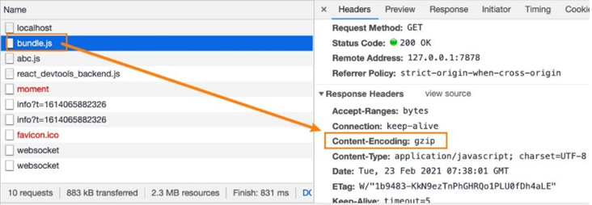
Proxy
proxy是我们开发中非常常用的一个配置选项，它的目的设置代理来解决跨域访问的问题：
比如我们的一个api请求是 http://localhost:8888，但是本地启动服务器的域名是 http://localhost:8000，这 个时候发送网络请求就会出现跨域的问题；
那么我们可以将请求先发送到一个代理服务器，代理服务器和API服务器没有跨域的问题，就可以解决我们的跨域问题了；
我们可以进行如下的设置：
1 | proxy: [ |
target：表示的是代理到的目标地址，比如 /api-hy/moment会被代理到 http://localhost:8888/api- hy/moment；
pathRewrite：默认情况下，我们的 /api-hy 也会被写入到URL中，如果希望删除，可以使用pathRewrite；
secure：默认情况下不接收转发到https的服务器上，如果希望支持，可以设置为false；
changeOrigin：它表示是否更新代理后请求的headers中host地址；
changeOrigin
这个 changeOrigin官方说的非常模糊，通过查看源码我发现其实是要修改代理请求中的headers中的host属性：
因为我们真实的请求，其实是需要通过 http://localhost:8888来请求的；
但是因为使用了代码，默认情况下它的值时 http://localhost:8000；
如果我们需要修改，那么可以将changeOrigin设置为true即可；
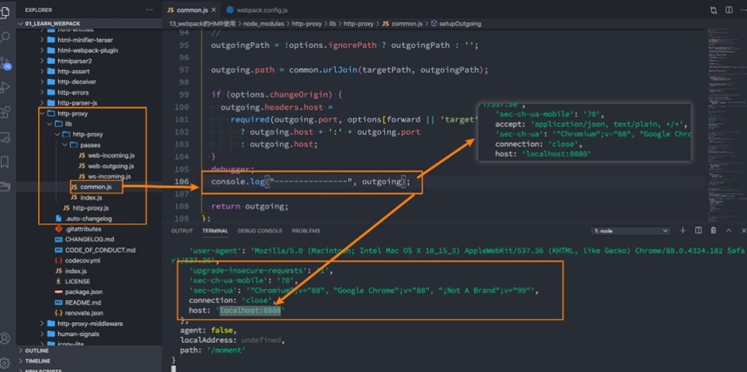
historyApiFallback
historyApiFallback是开发中一个非常常见的属性，它主要的作用是解决SPA页面在路由跳转之后，进行页面刷新 时，返回404的错误。
boolean值：默认是false
如果设置为true，那么在刷新时，返回404错误时，会自动返回 index.html 的内容；
object类型的值，可以配置rewrites属性：
可以配置from来匹配路径，决定要跳转到哪一个页面；
事实上devServer中实现historyApiFallback功能是通过connect-history-api-fallback库的：
可以查看connect-history-api-fallback 文档
resolve模块解析
resolve用于设置模块如何被解析：
在开发中我们会有各种各样的模块依赖，这些模块可能来自于自己编写的代码，也可能来自第三方库；
resolve可以帮助webpack从每个 require/import 语句中，找到需要引入到合适的模块代码；
webpack 使用 enhanced-resolve 来解析文件路径；
webpack能解析三种文件路径：
绝对路径
由于已经获得文件的绝对路径，因此不需要再做进一步解析。
相对路径
在这种情况下，使用 import 或 require 的资源文件所处的目录，被认为是上下文目录；
在 import/require 中给定的相对路径，会拼接此上下文路径，来生成模块的绝对路径；
模块路径
在 resolve.modules中指定的所有目录检索模块；
默认值是 [‘node_modules’]，所以默认会从node_modules中查找文件；
我们可以通过设置别名的方式来替换初识模块路径，具体后面讲解alias的配置；
确实文件还是文件夹
如果是一个文件：
如果文件具有扩展名，则直接打包文件；
否则，将使用 resolve.extensions选项作为文件扩展名解析；
如果是一个文件夹：
会在文件夹中根据 resolve.mainFiles配置选项中指定的文件顺序查找；
resolve.mainFiles的默认值是 [‘index’]；
再根据 resolve.extensions来解析扩展名；
extensions和alias配置
extensions是解析到文件时自动添加扩展名：
默认值是 [‘.wasm’, ‘.mjs’, ‘.js’, ‘.json’]；
所以如果我们代码中想要添加加载 .vue 或者 jsx 或者 ts 等文件时，我们必须自己写上扩展名；
另一个非常好用的功能是配置别名alias：
特别是当我们项目的目录结构比较深的时候，或者一个文件的路径可能需要 …/…/…/这种路径片段；
我们可以给某些常见的路径起一个别名；
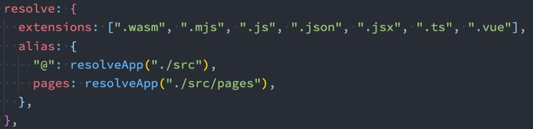
webpack生产环境配置
css提取
下载插件 npm install --save-dev mini-css-extract-plugin
修改配置
1 | const MiniCssExtractPlugin = require('mini-css-extract-plugin'); |
css兼容
详见：postcss-preset-env
补充一点：package.json中指定要兼容到哪个版本
1 | "browserslist" : { |
或者在根目录下新建.browserslistrc文件
1 | > 1% |
browserslist默认使用的是production环境变量 我们可以修改nodejs的环境变量来决定它的环境变量
1 | process.env.NODE_ENV = 'development' |
css压缩
下载插件 npm install --save-dev optimize-css-assets-webpack-plugin
webpack5改用 npm i -D css-minimizer-webpack-plugin
修改配置文件
1 | const OptimizeCssAssetsWebpackPlugin = require('optimize-css-assets-webpack-plugin' |
js语法检查
详见：eslint
js兼容处理
详见：babel
js压缩
生产环境下会自动压缩 js代码
1 | mode: 'production' |
HTML压缩
1 | plugins: [ |
性能优化
开发环境性能优化
- 优化打包构建速度
- 优化代码调试
生产环境性能优化
- 优化打包构建速度
- 优化代码运行的性能
HMR
HMR：hot module replacement 热模块替换/模块热替换 是基于开发环境的
作用：一个模块发生变化，只会宠幸打包这一个文件，而不是打包所有的源文件
样式文件：可以使用HMR，因为在style-loader内部实现了，所以在开发环境中，都用style-loader
js文件：默认不能使用HMR.要使用，在对应js文件中添加如下代码
注意：HMR功能对js的处理，只能处理非入口js文件的其他文件！！！！
1 | if(module.hot){ |
html文件：默认不能使用HMR功能，同时会导致问题： html文件不能热更新了～(不用做HMR功能)
解决：修改entry入口，将html文件引入
1 | entry：['src/index.js', 'public/index.html'] |
source-map
作用：一种提供源代码到构建后代码映射技术（如果构建后代码出错了，通过映射可以追踪源代码错误)
参数：[inline-|hidden-|eva1-][nosources-][cheap-[module-]]source-map
1 | source-map: 外部 |
如何决定使用哪个呢？
开发环境：
速度快：（eval>inline>cheap…）=> eval-cheap-source-map || eval-source-map
调试更友好： source-map || cheap-module-source-map || cheap-source-map
结论： 推荐 eval-source-map / eval-cheap-module-source-map
生成环境：
注：内联会让生产环境变的特别大 所以在生产环境下不推荐这种方式
源码要不要隐藏：nosources-source-map || hidden-source-map
调试要不要更友好：source-map || cheap-module-source-map
结论：推荐 source-map
oneOf
oneof是提供优化生产环境打包配置的，正常来讲，一个文件只能被一个loader处理。
比如：同时同时处理css文件和less文件，都需要css-loader，会让css-loader重复的执行，而oneof则会优化
1 | //以下 loader只会匹配一个 |
注意：两个loader处理一个时，则需要放在外面
比如：js文件需要eslint-loader处理和babel-loader处理。这个时候我们就需要单独提取出。
1 | module:{ |
缓存
生产环境
当我们的js代码有很多时，我们修改其中的一个，并不希望所有的js代码都重新被打包。此时我们就要用到生产环境的缓存处理
babel缓存
让第二次打包构建速度更快
1 | // babel-loader配置项中开启babel缓存，第二次构建的时候就会读取缓存 |
此时，用户第一次打开就会生成缓存，后面打开的话就会很快。
但是，如果你的js css代码修改的话，重新打包，页面将不会有任何反应，因为他们用的都是第一次留下的缓存，那我们怎么让他正常的处理呢？ 我们对文件名加入hash值即可
1 | //在webpack.config.js中，所有的filename中加入hash值即可,比如下述代码 |
造成的问题：因为css和js同时使用一个hash值。
如果重新打包，会导致所有的缓存失效。（我们只想改变其中的一个文件）
chunkhash：不行，因为所引入的js，css等文件都是源自一个chunk，所以他们生成的哈希值也一样
1 | filename:'index[chunkhash:10].js' |
contenthash：不同文件会生成不同的哈希值，可以
1 | filename:'index[contenthash:10].js' |
tree shaking
作用：去除无用代码，让代码体积变小
前提：
1、必须使用模块化
1 | import {increment, decrement} from 'utils' |
2、开启production环境
1 | mode:'production' |
在package.json中配置
1 | "sideEffects":false //所有代码都没有副作用,即可以进行tree shaking |
code split
code split 就是解决防止打包后一个文件过大，而请求缓慢.
code split 就是生成多个chunk，即把代码分成很多块
作用：
1、可以将node_modules中代码单独打包一个chunk
2、自动分析多入口chunk中，有没有公共的文件，如果有则会打包成一个chunk
1 | entry:'./src/index.js' //单入口 |
在后面加入下述代码即可
1 | optimization:{ |
其次，我们还可以通过写js代码方式进行单独打包，首先要配置optimization和单入口
1 | //这是在index.js中引入。假设有test.js和index.js在同一层级 |
总结三种方法
- 使用多入口文件进行单独打包
- 引入optimization相关配置，会根据单入口，多入口进行打包
- 引入optimization相关配置，在js中写入对应js代码，进行单独打包
懒加载和预加载
不是图片的懒加载，这里指的是js代码的懒加载
懒加载：当文件使用的时候加载
预加载 prefetch ：等其他资源加载完，再加载… 兼容性较差，一般都是用懒加载就够了
1 | //这里比如当点击btn时，加载test.js文件 |
PWA
pwa即离线可访问技术
1 | const WorkboxWebpackPlugin = require('workbox-webpack-plugin') |
然后还要去index.js中输入相应js代码
1 | if('serviceWorker' in navigator){ |
到这里，再打包eslint则会报错，不认识navigator等关键字，故我们要修改eslint中的配置
1 | //在package.json中eslintConfig中添加下面代码 |
serviceWorker必须运行在服务器上
多进程打包
多进程打包主要用来优化打包速度。用的是thread-loader
在哪里用，在那里加就可以，基本是给js文件处理
1 | use:[ |
开启多线程打包，只有工作消耗时间比较长，我们才开启多线程打包，否则会适得其反，多线程启动大概600ms
externals
可以禁止打包一些从cdn中可以获取到库，从而达到代码量少,在webpack.config.js中配置
1 | externals:{ |
然后在html中通过script标签引入cdn链接
1 | <script src="https://cdn.jsdelivr.net/npm/vue@2/dist/vue.js"></script> |
dll
dll和上面的externals相似。dll是需要打包一次。而externals是不打包
我们要新建webpack.dll.js文件
1 | const {resolve} = require('path') |
然后在config.js配置如下即可
1 | const {resolve} = require('path') |
更详细配置待更新 …